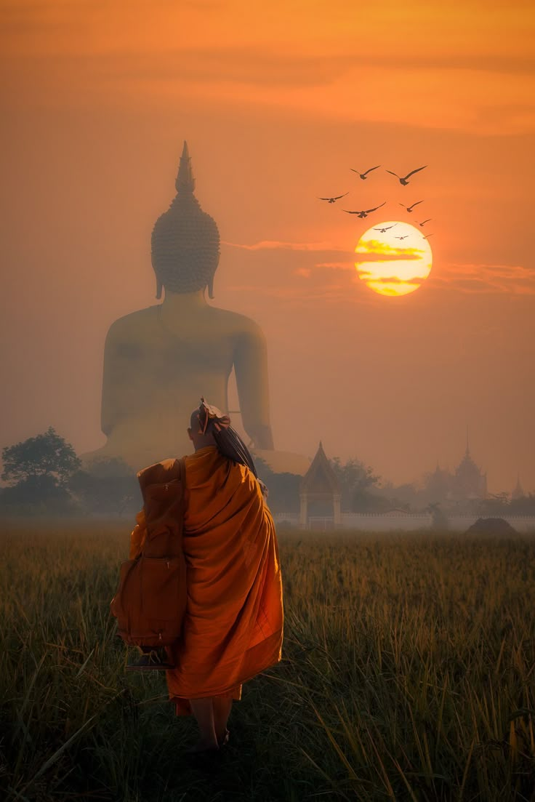
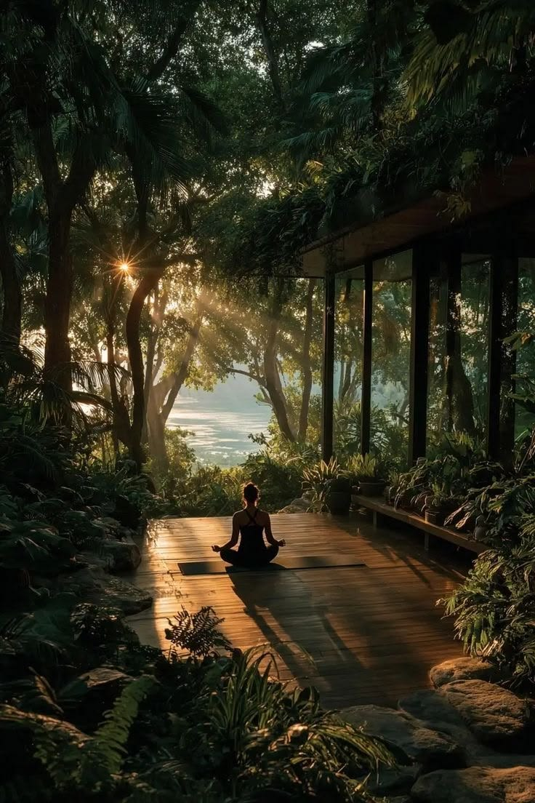

Our Story
Thirteen years of sitting still on this hillside.
Saraṇa began as a single open-air hall built by a small group of practitioners who wanted a quiet, unhurried place to teach and to practice. It has stayed small on purpose.

How We Began
Built by practitioners, not by a brand.
Our founder, a former schoolteacher, spent two years studying in forest monasteries across the hill country before clearing a small plot of land above Kandy. The first hall was built from reclaimed timber and roofed with clay tile — it's still the heart of the center today.
What started as informal weekend sittings for friends grew, slowly and without much marketing, into a full retreat schedule welcoming visitors from across Sri Lanka and abroad.
What We Believe
A few principles that shape every session
Slow, on purpose
No rush from one practice to the next. Long gaps between sessions leave room for what actually settles.
Teachers, not gurus
Our teachers train for years, but they'll be the first to point you back to your own experience.
Open to everyone
Whether you practice within a tradition or none at all, the door here is the same for everyone.

Beyond the Main Hall
Quiet corners for practice on your own time.
Between scheduled sessions, the grounds are yours — a scattering of quiet decks and clearings tucked into the tree line, each one a short walk from the hall.
Many guests find this unstructured time becomes just as important as the guided sittings: a place to sit with what came up, or simply to watch the light change.
Resident Teachers
The people who hold the hall
Each teacher trained for years before joining Saraṇa, across meditation, movement, and sound practice.
Ajahn Kumara
Meditation
Trained in forest monasteries for over twenty years before founding Saraṇa in 2011.
Dilani Silva
Yoga & Movement
Leads breath-led movement practice, trained in Mysore and Colombo.
Ruwan Jayasuriya
Sound Healing
Works with Kandyan singing bowls and long-tone practice for nervous-system rest.
Maya Fernando
Retreat Guidance
Oversees silent retreats and one-on-one guidance for longer stays.
Come Sit With Us
Meet the teachers in person.
Daily programs are open to drop-ins — no experience or booking required for a single sitting.
See the Program Guide